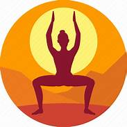

ASHTANGA
Ashtanga Yoga ist eine dynamische und kraftvolle Form des Yoga, die
durch eine festgelegte Abfolge von Haltungen (Asanas) und
Atemkontrolle (Pranayama) gekennzeichnet ist. Diese Praxis betont die
Verbindung von Atmung und Bewegung, wobei die Asanas in einer
spezifischen Reihenfolge ausgeführt werden. Ashtanga Yoga fördert
körperliche Kraft, Ausdauer, Flexibilität und Konzentration. Es wurde
von Sri K. Pattabhi Jois entwickelt und basiert auf den Prinzipien des
"Yoga Sutras" von Patanjali.
.jpg)
PRIMARY SERIES
Primary Series (Yoga Chikitsa): Diese Serie legt den Grundstein für
die Ashtanga-Praxis und konzentriert sich auf Reinigung und Heilung
des Körpers. Sie umfasst Sonnengrüße, stehende Haltungen,
Sitzhaltungen, Vorwärtsbeugen, Rückwärtsbeugen, Umkehrhaltungen und
Abschlusssequenzen.
.jpg)
INTERMEDIATE SERIES
Intermediate Series (Nadi Shodhana): Diese Serie baut auf der Primary
Series auf und fördert die Reinigung der Nadi (Energiekanäle). Sie
beinhaltet anspruchsvollere Asanas und Umkehrhaltungen, die die
Flexibilität und Stärke weiterentwickeln.
.jpg)
ADVANCED SERIES
Advanced Series (Sthira Bhaga A, B, C, D): Diese Serien sind für
fortgeschrittene Praktizierende konzipiert und setzen eine solide
Basis aus den vorherigen Serien voraus. Die fortgeschrittenen Serien
fördern tiefe Flexibilität, körperliche Stärke und spirituelle
Entwicklung.